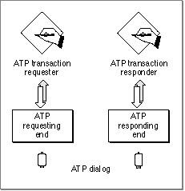
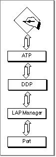

About ATP
The AppleTalk Transaction Protocol offers a simple, efficient means of transferring
small amounts of data across a network; it lets one network entity request information
of another entity that possesses only the ability to respond to the request. ATP ensures that data is delivered without error or packet loss.ATP communication is based on the concept of a transaction: one party, the requester, makes a request of another party, the responder, to perform a service and return a response. This discussion uses the term requesterto refer to an application that uses ATP to make a request and responder to refer to an application that uses ATP to respond to
a request.When it receives a request, the responder application performs the necessary processing to service it and sends a response message back to the requester, completing the transaction. The response message can be data that reports the result of the trans-
action or information produced as a result of the processing. Here is how a basic transaction occurs:Figure 6-1 shows this interaction.
- The requester application calls the .ATP interface, and the .ATP driver on the requester side sends the request to the .ATP driver on the responder side.
- The .ATP driver on the responder side passes the request to the responder application, which is listening for incoming .ATP requests.
- The responder application satisfies the request and prepares a response, then calls
the ATP interface to transmit the response via the .ATP driver back to the requester application.
The amount of data that a requester application can send is limited to 578 bytes; the amount of data that a responder application can return is limited to 4624 bytes. The ATP programming interface includes a function that lets you add one or more single packets to follow the initial response, up to a total of eight packets including the initial number of packets sent, if you do not send eight packets in the initial response.
You can implement applications that use ATP to perform network-based transactions in the following two ways:
- Note
- Although you can use the ATP add-response function to extend the amount of response data, if you intend for your application to transfer large amounts of data, you should choose a transport protocol other than ATP. For example, you can use ADSP, which allows you to send and receive continuous streams of data.

ATP is a direct client of DDP, and it adds reliable delivery of data to the transport delivery services that DDP provides. Figure 6-2 shows ATP and the underlying
- You can write a single application that handles both the responder and requester actions of an ATP transaction and run that application on two networked nodes. This method allows each application to act as either the requester or the responder. The interaction remains asymmetric; only one side can control the communication during a single transaction. However, each side has the capacity to initiate a transaction by sending a request to the other side.
- You can write two distinct applications, one application that implements only the requester part of a transaction and another application that implements only the responder side. This scenario lends itself to a client-server model in which many nodes on a network run the requester application (client), while one or more nodes run the responder application (server); one server can respond to transaction requests from various clients.
protocol stack.Figure 6-2 ATP and its underlying protocols

Subtopics
- The ATP Packet Format
- At-Least-Once and Exactly-Once Transactions
- The Buffer Data Structure
- ATP Flags